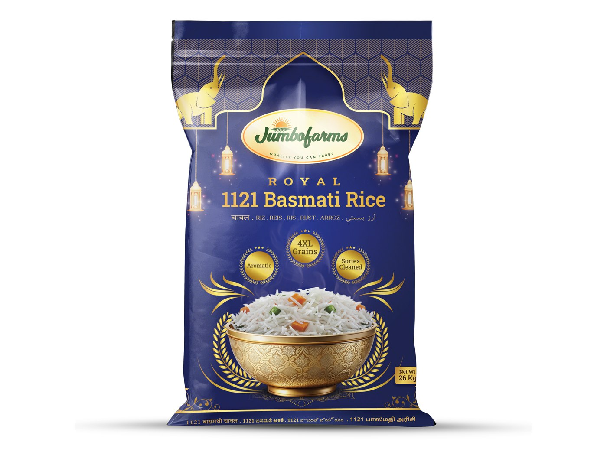
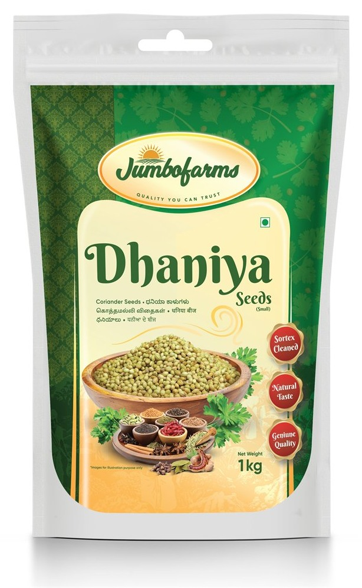
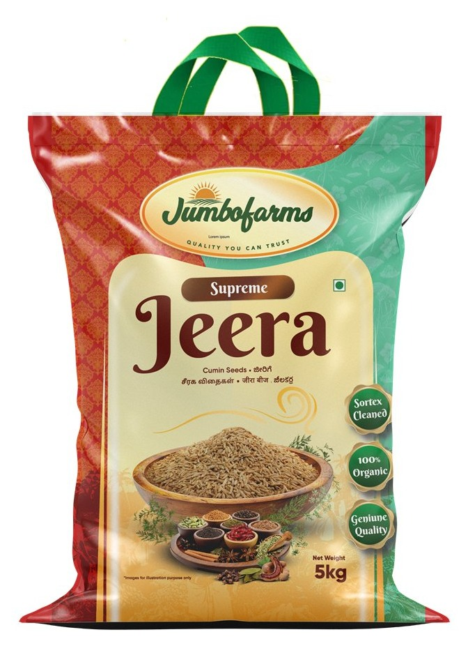
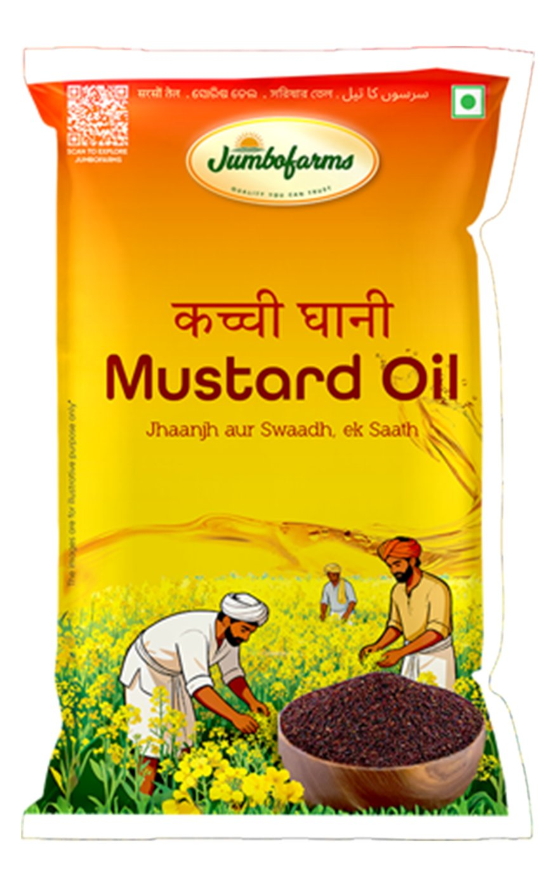
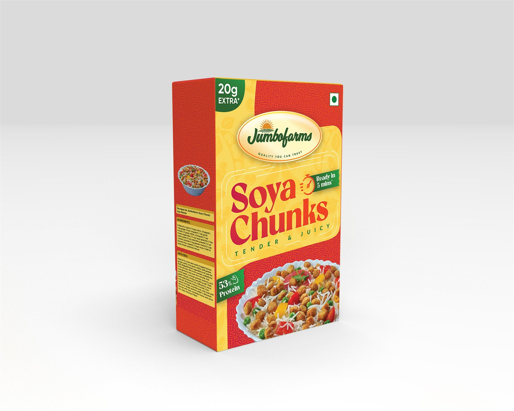
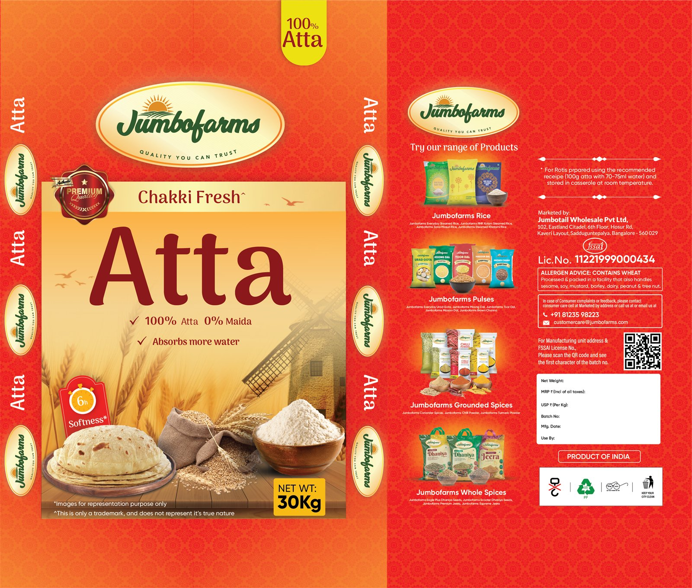
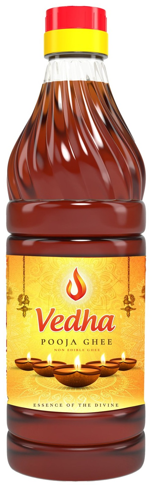
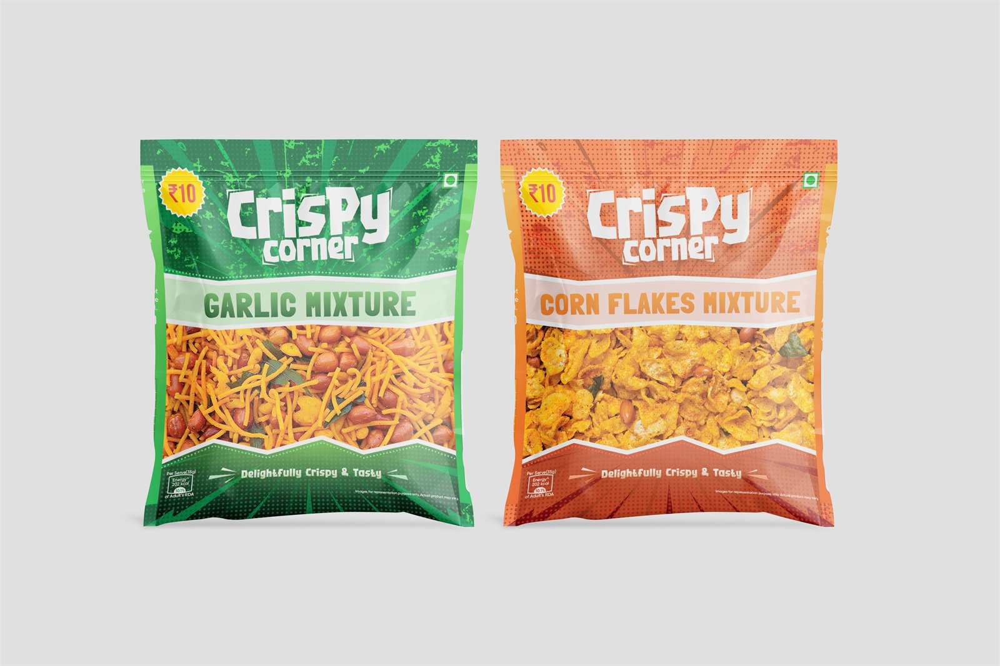

Jumbotail
A year designing the own-brand shelf for a B2B wholesale marketplace — the packaging, the shop front and the campaigns that carry it. Jumbofarms is the staples brand, with Vedha and Crispy Corner alongside it.
Own brands are how a marketplace stops being a middleman.
Jumbotail sells to kirana stores. Anything it lists, a competitor can list too — unless it owns the brand. Jumbofarms is that answer for staples: rice, dals, flour, spices, oil.
Which makes the packaging the product. There is no store frontage doing the persuading and no advertising behind it; the sack on the pallet is the whole brand, and it has to work for a shopkeeper buying twenty-six kilos at a time as well as for the household the shopkeeper sells to.
Three brands, two shelves, one system underneath.
Jumbofarms carries the staples and behaves like a house brand — one oval mark, one set of quality roundels, one way of photographing a bowl of the raw product. Within it, each range solves its own problem: nine grades of basmati separated by colour alone, a cumin bag that changes by a ribbon, a mustard oil that had to survive being both a bottle and a pouch.
Jumbofarms is the one that behaves like a brand rather than a label: nine ranges, a shared mark, and a retail kit that puts it on the front of the shop. Vedha and Crispy Corner sit outside it, because a pooja ghee and a ₹10 namkeen are not staples and should not look like them. Vedha even shares a bottle with the mustard oil — the label is the only thing keeping them apart.
Alongside the packaging sat the retail layer: fascia, danglers, standees and posters that had to be co-brandable with whatever store they went into.
Nine ranges, each with its own page.

Rice
Nine grades of 1121 basmati, separated by colour alone.
View ↗
Coriander
A retail pouch and a bulk handled sack, one identity.
View ↗
Jeera
Two grades of cumin sharing a single 5 kg bag.
View ↗
Mustard Oil
One artwork across bottles, pouches and a promotion.
View ↗
Soya Chunks
A price-point sachet and a shelf carton, held together by colour.
View ↗
Dals
Twenty-six kilo sacks, set in more than one language.
View ↗
Atta & Sooji
A 30 kg flour sack and a 500 g retail pouch.
View ↗
Vedha Pooja Ghee
Lamp ghee sharing a bottle with a cooking oil.
View ↗
Crispy Corner
A namkeen sachet where the product is the artwork.
View ↗